跟着猴子老师学习的一个Unity卡通地编的制作。使用Unity的LWRP轻量级渲染管线制作，通过Substance Designer，Zbrush，Maya，Photoshop来辅助完成模型贴图部分。材质部分涉及水和互动草的Shader制作，利用GPU的特性来快速实例像旷野之息一样的草坪。使用Houdini来制作树的叶子，给物件做LOD优化。
1. 地形系统
地形系统的构建用到了Terrain Tools包，用于改善在Unity中创建地形的工作流程。
在Terrain Toolbox中设置创建的地形大小点击Create创建地形，可以通过导入外部Heightmap来创建地形。
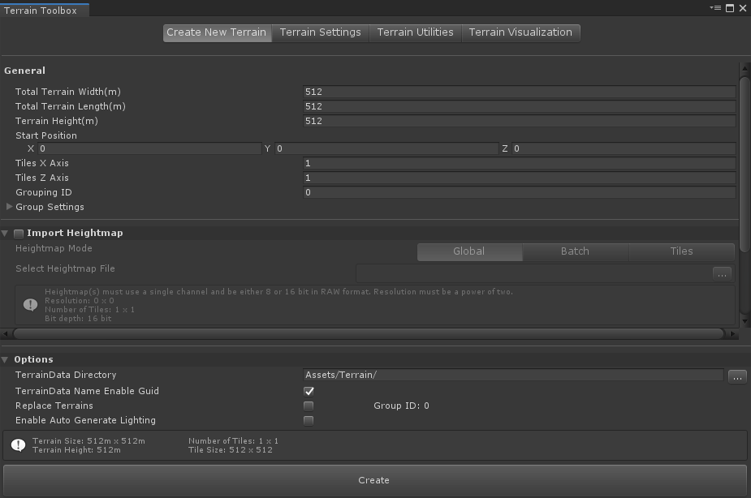
在Edit-Shortcuts-Terrain中可以更改创建地形的快捷键，如Select Set Height Tool、Select Smooth Tool等。通过ASD调节笔刷的强度、大小和旋转角度。
使用Raise or Lower Terrain、Set Height、Smooth Height构建基本地形。
完成地形构建后，通过Create-Terrain Layer创建层，在地形-Paint Texture-Layer中添加图层。为地形绘制贴图。
2. 石头雕刻
使用Zbrush对石头低模进行雕刻，其中用到了卡通风格的笔刷(提取码uaqi)。
3. 石头贴图
利用Substance Designer制作石头的贴图。首先将高模和低模导入SD中，在SD中烘培AO、Normal(Tangent)、Normal(World)、Curvature、Position图。
3.1 Normal
在高模烘培的法线贴图上叠加裂痕、磨损等细节效果。细节效果通过Creased节点得到，裂痕效果通过Cells节点得到，磨损坑洼效果可通过Tile Sampler节点得到。
石头上的横纹使用Light节点通过世界空间的法线贴图得到石块的遮罩，以此避免石块顶部也出现横纹。
Light节点：根据世界空间法线贴图进行伪照明，并返回黑白“光照图”蒙版。
3.2 Base Color
颜色贴图用到了Gradient Map节点来得到表面的基本颜色，使用Dirt节点根据烘培的Curvature、AO、世界空间的法线贴图来生成石块缝隙的青苔效果。
Gradient Map节点：从灰度映射到自定义的颜色色带，颜色色带可以通过取色曲线得到。
Dirt节点：根据烘焙的Curvature、AO、Normal(World)和用户设置生成黑白蒙版，表示在被遮挡和凹陷的边缘和角落出现了污垢。
Edge Damage节点：根据烘焙的曲率和AO对凸起的凸边缘造成的损坏图和用户设置生成黑白蒙版。
3.3 贴图导入Unity
在Substance Designer导出贴图时，将Metallic/Smoothness/Occlusion合并在一张贴图内。
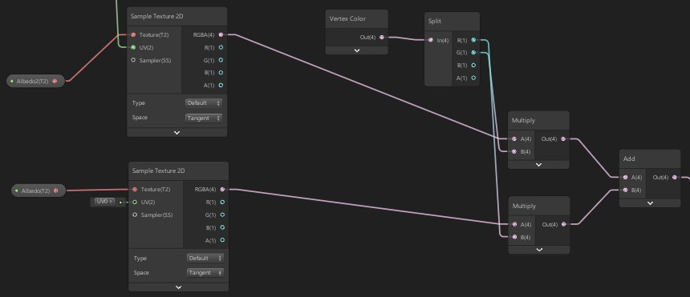
在石头的Shader中，将Vertex Color的R通道和G通道分别使用不同的Albedo贴图。
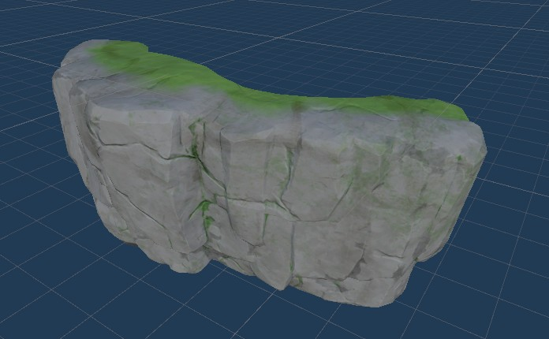
4. 水Shader制作
4.1 Normal部分
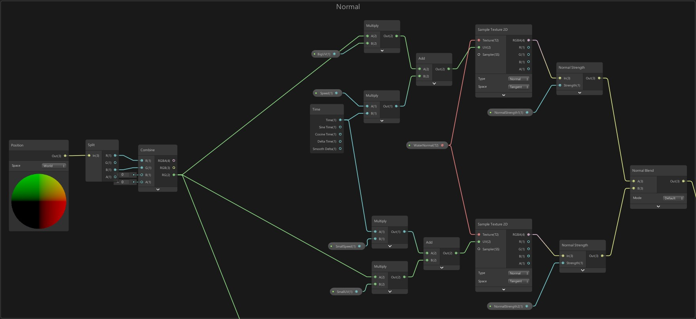
水的Normal部分首先对世界空间的Position进行拆分，由于只是X/Z平面的移动，因此将Position的R/B组合为一个新的二维向量。
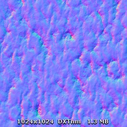
使用Time节点控制移动，将法线贴图以不同的UV大小生成大小波浪叠加的效果。
4.2 颜色部分
水在不同深度颜色有所差异，通常在较浅的区域颜色也比较浅，透明度也比较高。
4.2.1 Alpha
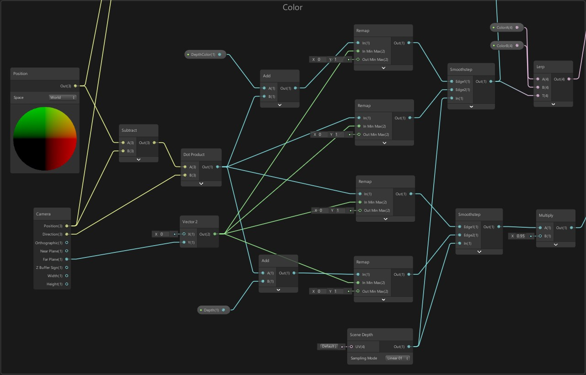
首先用世界空间的Position减去相机的Position，然后与相机的方向进行点积Dot并控制在0~1之间，与加上自定义深度值的结果进行平滑操作。将Scene Depth作为Smoothstep的输入。得到了水面的透明度以体现深度。
Smoothstep节点类似类似于Lerp节点，但Smoothstep不是线性插值。
Scene Depth节点访问当前Camera深度缓冲区。
4.2.2 焦散效果
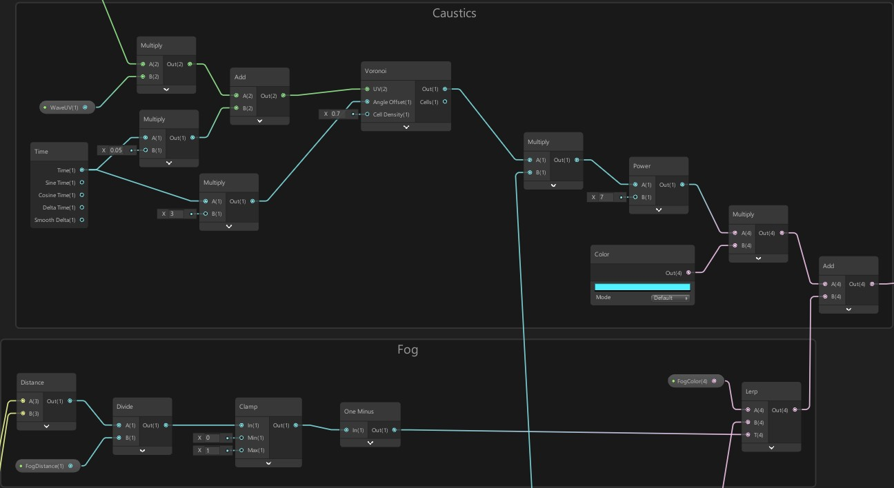
焦散效果的模拟主要用了Voronoi节点，使用之前组合的二维向量与Time节点扭曲运动Voronoi节点，并叠加焦散颜色。
4.2.3 颜色
水的颜色再进行一次透明度处理中的操作并使用两个颜色进行插值得到水面的颜色。计算相机与世界空间的距离，加深相机远处的水面颜色。
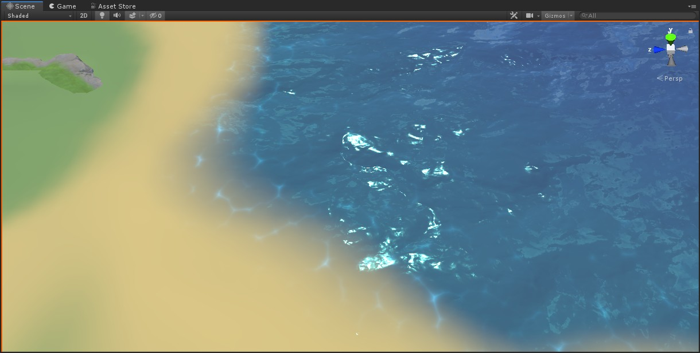
5.草Shader制作
草Shader的制作主要分为更改草模型的顶点位置和材质的颜色。
5.1 模型部分
在Maya中创建简单的草模型，并制作LOD。
然后对三个LOD绘制顶点颜色，并更改其顶点方向。
5.2 Shader部分
5.2.1 颜色
颜色主要根据预先制作的渐变图将草顶部和底部的颜色进行插值，然后加上运动的Noise图以模仿风吹过草地的效果。
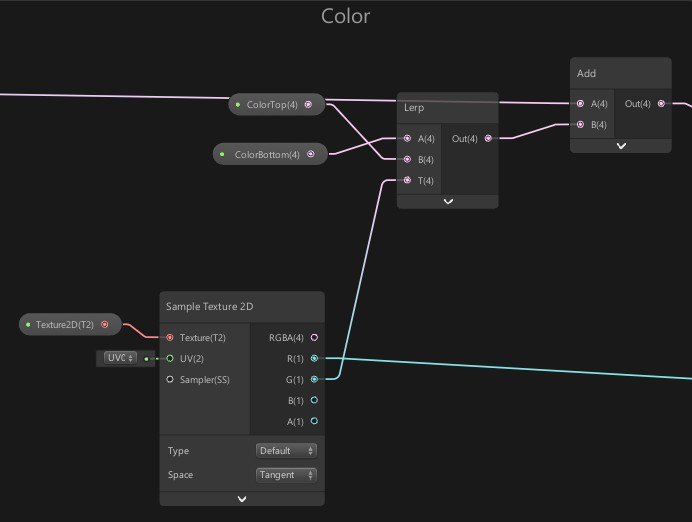
5.2.2 Position
Position由模拟风的效果和角色与草的互动组成。
风吹草地的摇摆效果与颜色部分类似，通过一张运动的Noise图去改变顶点的位置，并根据顶点色改变摇摆的权重。
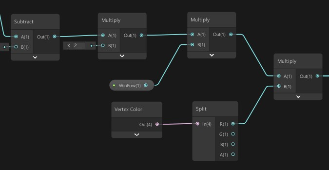
角色与草的互动效果涉及到草的模型空间到世界空间的转换，然后根据草和角色的距离和方向改变顶点的位置。
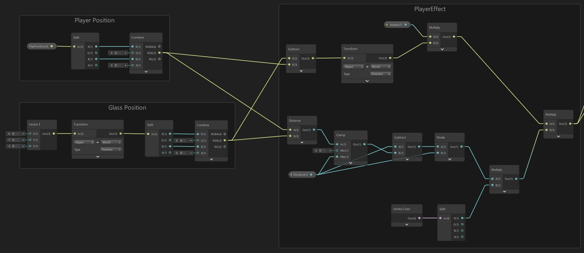
效果如下：
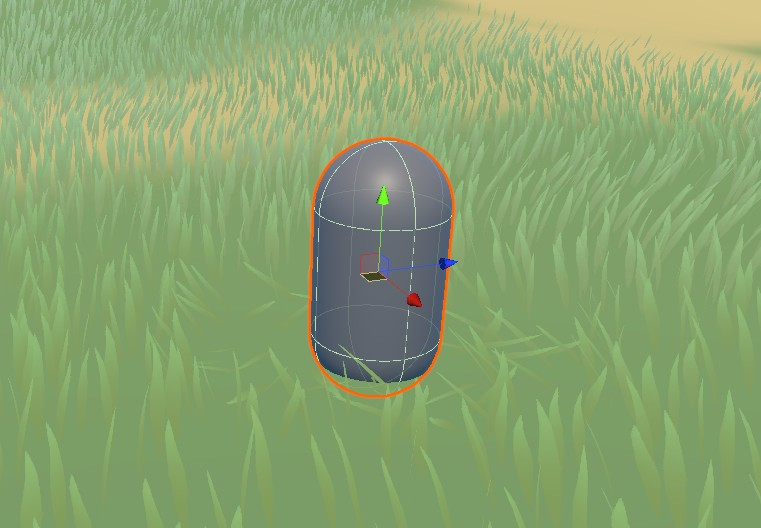